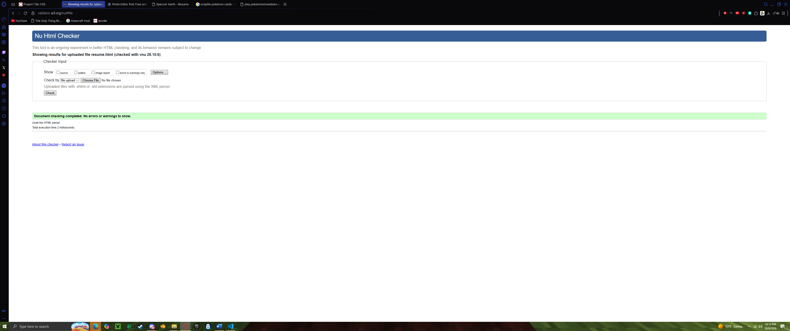

Information Technology and Management Student
Email: sharth@hawk.illinoistech.edu | Location: Chicago, IL
I am an Information Technology undergraduate student looking for opportunities to use my background in network configuration and systems administration toward a career as an IT Manager.
Bachelor of Information Technology and Management
Expected Graduation: May 2029
I made a conceptual network architecture for a small business startup for one of my classes, including IP addressing schemes, security segmentation, and data flow modeling for a 20 employee office.
Designed and built a object oriented software programs implementing custom GUIs, file input/output routines, and modular parts.
Below is the proof of W3C HTML validation for this resume page:
